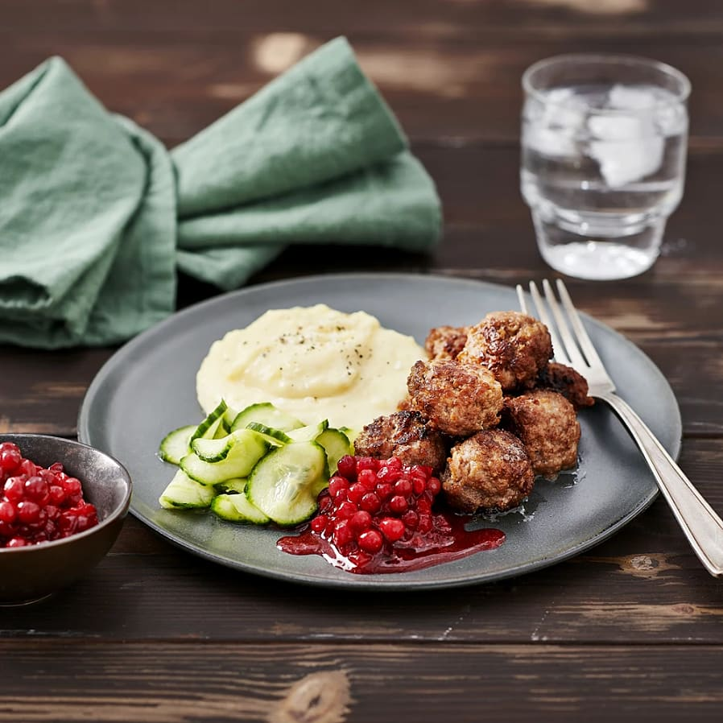

Meatballs

- 1 1/2 dl mjölk
- 5 msk ströbröd
- 500 g nöt- eller blandfärs
- 1/2 gul lök (skalad och riven)
- 1 ägg
- 1 tsk salt
- 1 krm peppar
- 1/2 tsk socker
- smör
- Blanda mjölk och ströbröd. Låt svälla i 10 minuter. Tillsätt
färs, lök, ägg, salt, peppar och socker i ströbrödsblandningen. Arbeta färsen smidig.
-
Fukta händerna med kallt vatten och forma köttbullar. Stek några i taget i matfett,
skaka pannan då och då så att köttbullarna rullar runt och håller sig runda.